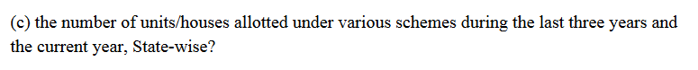

What is a Parliamentary Question?
In the Lower and Upper House of the Indian Parliament, there is a special provision wherein all Honourable Members of Parliament (MPs) can ask questions on every aspect of administration and Governmental activity. Think of this as something similar to a Right to Information (RTI) request that can only be used by our MPs. However, a pivotal difference between a normal RTI request and a parliamentary question is that parliamentary question in addition of seeking factual information can also ask the government non-factual and policy questions.
For example, a MP can through a parliamentary question can directly ask the Minister of Environment, Forest and Climate Change, “Why has the government repeatedly failed to control Delhi’s air pollution?”. After this question is filed and selected, then the Minister will have to answer this question on the floor of the Parliament on live TV. Ministers take this exercise seriously and are conscious of their image and delivery while responding to the question.
More information regarding these Questions is available on the Parliament's website.
How can you make the intervention more effective?
Given their busy schedules, MPs rarely have the time to research and frame these questions themselves. Typically, these questions are hastily framed by the MP’s research assistant or PA. Therefore, these questions are not always able to actualize the impact they can create. The reality is that these questions can be used a lot more effectively if they were framed by NGOs, activists and organizations that have in depth understanding of specific sectors and social issues. Therefore, we invite you to ask questions on our platform.
How does this website work?
All the questions submitted through the form will be uploaded onto a database that would be accessed by MPs, MPs’ personal/research assistants. Depending on the feasibility and appeal of these questions, specific questions will be selected by them. These questions may be edited or tweaked by the MP’s researcher depending upon his or her discretion. Furtheron, these questions will then be submitted to the Parliament. If your question is selected by the MP’s assistant you will receive a confirmation email from him/her. In addition, you will receive an email when the question is submitted to the parliament and another one regarding the status of the question after the Parliamentary ballot.
How do you frame a question?
All Parliamentary questions follow a specific format and language style. For example, when you want to ask a yes/no question:
Starred Question No. 380, 16th Lok SabhaOr whether a specific issue or report has been noted by the Government:
Starred Question No. 378, 16th Lok SabhaOr you simply want some data:
 Unstarred Question No. 522 answered on July 20 2017, Rajya SabhaIn addition to following those guidelines, you need to make sure that:
- the question is addressed to the appropriate Ministry.
- the question text is at most 250 words
- (preferably) the question hasn’t been asked in Lok Sabha or Rajya Sabha recently.
Some examples of quality questions:
- Regarding the Nai Manzil scheme by Dr. Shashi Tharoor
- Regarding the employment of children in mines by Mr. V. Vijayasai Reddy
Do all questions get selected?
There is a limit to the number of questions the Parliament will select on any given day. The Parliament always receives more questions than it can take. Therefore, the Parliament conducts a ballot where on an average about 50% of the submitted questions get selected. The concerned ministries are required to answer all these questions during the Parliamentary session. However, only very few of these questions will be asked on the floor of the House. Irrespective, all selected questions along with their answers are compiled and added to the Lok Sabha and Rajya Sabha Question database that are often used by researchers, journalist and organizations as references.